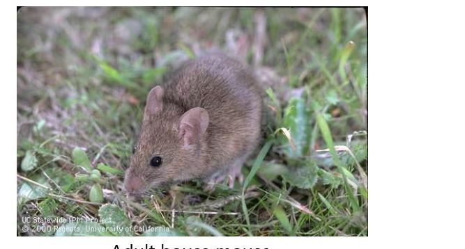
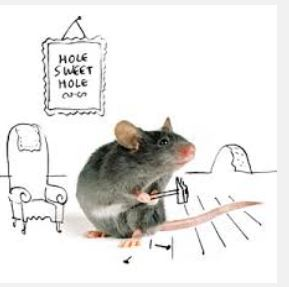

mus!
Since mice have a higher population number than rats, they are more widespread. The adult house mouse is small and slender and about 1-2 inches long, excluding tail. The house mouse has large ears (as seen photo below), pointed nose and small eyes. The tail is as long as the head and body combined. The fur color varies, but it is usually a light grey or brown but could be darker shades. The House Mouse weighs about 1/2 to 1 oz as an adult. Mice can identified from young rats by the size of the head and the hind feet.
If food water and shelter are available, mice can rapidly multiply. Mice become sexually mature in just a couple months and produce about 8 litters in one year. Each mice litter has 4-7 pups. A house mice in a city environment may spend its entire life in buildings. In rural and suburban settings, it may not only live inside, but be found outside near foundations, in the shrubbery, weeds, crawl spaces, basements, or in garages.
Mice nibble on food all day long. They eat many times and eat at different locations. However, they do have two main meal times, just before dust and just before dawn. They can eat about 10 to 15% of their body weight every day, the adults weighing about 5/8-1 oz. Mice also cache food as supply permits. They get much of their water from food products.